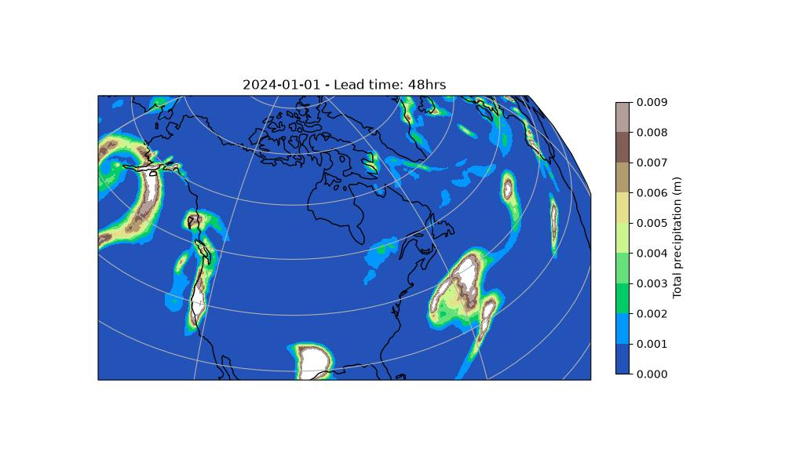

Running Diagnostic Inference¶
Basic prognostic + diagnostic inference workflow.
This example will demonstrate how to run a deterministic inference workflow that couples a prognostic model with a diagnostic model. This diagnostic model will predict a new atmospheric quantity from the predicted fields of the prognostic.
In this example you will learn:
- How to instantiate a prognostic model
- How to instantiate a diagnostic model
- Creating a data source and IO object
- Running the built in diagnostic workflow
- Post-processing results
Set Up¶
All workflows inside Earth2Studio require constructed components to be handed to
them. In this example, let's take a look at the diagnostic workflow:
earth2studio.run.diagnostic.
Thus, we need the following:
- Prognostic Model: Use the built in FourCastNet Model
earth2studio.models.px.FCN. - Diagnostic Model: Use the built in precipitation AFNO model
earth2studio.models.dx.PrecipitationAFNO. - Datasource: Pull data from the GFS data api
earth2studio.data.GFS. - IO Backend: Save the outputs into a Zarr store
earth2studio.io.ZarrBackend.
import os
os.makedirs("outputs", exist_ok=True)
from dotenv import load_dotenv
load_dotenv() # TODO: make common example prep function
from earth2studio.data import GFS
from earth2studio.io import ZarrBackend
from earth2studio.models.dx import PrecipitationAFNO
from earth2studio.models.px import FCN
from earth2studio.utils.time import to_time_array
# Load the default model package which downloads the check point from NGC
package = FCN.load_default_package()
prognostic_model = FCN.load_model(package)
package = PrecipitationAFNO.load_default_package()
diagnostic_model = PrecipitationAFNO.load_model(package)
# Create the data source
data = GFS()
# Create the IO handler, store in memory
io = ZarrBackend()
Console output68 lines
Downloading config.json: 0%| | 0.00/22.0 [00:00<?, ?B/s]
Downloading config.json: 100%|██████████| 22.0/22.0 [00:00<00:00, 121B/s]
Downloading config.json: 100%|██████████| 22.0/22.0 [00:00<00:00, 121B/s]
Downloading fcn.mdlus: 0%| | 0.00/287M [00:00<?, ?B/s]
Downloading fcn.mdlus: 3%|▎ | 10.0M/287M [00:01<00:54, 5.29MB/s]
Downloading fcn.mdlus: 7%|▋ | 20.0M/287M [00:02<00:34, 8.12MB/s]
Downloading fcn.mdlus: 10%|█ | 30.0M/287M [00:03<00:29, 9.18MB/s]
Downloading fcn.mdlus: 14%|█▍ | 40.0M/287M [00:04<00:27, 9.34MB/s]
Downloading fcn.mdlus: 17%|█▋ | 50.0M/287M [00:06<00:27, 8.94MB/s]
Downloading fcn.mdlus: 21%|██ | 60.0M/287M [00:07<00:27, 8.56MB/s]
Downloading fcn.mdlus: 24%|██▍ | 70.0M/287M [00:08<00:27, 8.44MB/s]
Downloading fcn.mdlus: 28%|██▊ | 80.0M/287M [00:09<00:23, 9.24MB/s]
Downloading fcn.mdlus: 31%|███▏ | 90.0M/287M [00:10<00:20, 10.3MB/s]
Downloading fcn.mdlus: 35%|███▍ | 100M/287M [00:10<00:16, 11.7MB/s]
Downloading fcn.mdlus: 38%|███▊ | 110M/287M [00:11<00:15, 12.0MB/s]
Downloading fcn.mdlus: 42%|████▏ | 120M/287M [00:12<00:13, 13.3MB/s]
Downloading fcn.mdlus: 45%|████▌ | 130M/287M [00:12<00:11, 14.4MB/s]
Downloading fcn.mdlus: 49%|████▊ | 140M/287M [00:13<00:09, 15.7MB/s]
Downloading fcn.mdlus: 52%|█████▏ | 150M/287M [00:14<00:08, 16.5MB/s]
Downloading fcn.mdlus: 56%|█████▌ | 160M/287M [00:14<00:07, 17.3MB/s]
Downloading fcn.mdlus: 59%|█████▉ | 170M/287M [00:15<00:06, 17.8MB/s]
Downloading fcn.mdlus: 63%|██████▎ | 180M/287M [00:15<00:06, 18.0MB/s]
Downloading fcn.mdlus: 66%|██████▌ | 190M/287M [00:16<00:05, 18.4MB/s]
Downloading fcn.mdlus: 70%|██████▉ | 200M/287M [00:16<00:05, 18.1MB/s]
Downloading fcn.mdlus: 73%|███████▎ | 210M/287M [00:17<00:04, 18.4MB/s]
Downloading fcn.mdlus: 77%|███████▋ | 220M/287M [00:18<00:03, 18.4MB/s]
Downloading fcn.mdlus: 80%|████████ | 230M/287M [00:18<00:03, 18.9MB/s]
Downloading fcn.mdlus: 84%|████████▎ | 240M/287M [00:19<00:02, 18.9MB/s]
Downloading fcn.mdlus: 87%|████████▋ | 250M/287M [00:19<00:02, 19.3MB/s]
Downloading fcn.mdlus: 91%|█████████ | 260M/287M [00:20<00:01, 20.2MB/s]
Downloading fcn.mdlus: 94%|█████████▍| 270M/287M [00:20<00:00, 20.3MB/s]
Downloading fcn.mdlus: 97%|█████████▋| 280M/287M [00:21<00:00, 21.0MB/s]
Downloading fcn.mdlus: 100%|██████████| 287M/287M [00:21<00:00, 20.8MB/s]
Downloading fcn.mdlus: 100%|██████████| 287M/287M [00:21<00:00, 14.1MB/s]
Downloading global_means.npy: 0%| | 0.00/336 [00:00<?, ?B/s]
Downloading global_means.npy: 100%|██████████| 336/336 [00:00<00:00, 441B/s]
Downloading global_means.npy: 100%|██████████| 336/336 [00:00<00:00, 440B/s]
Downloading global_stds.npy: 0%| | 0.00/336 [00:00<?, ?B/s]
Downloading global_stds.npy: 100%|██████████| 336/336 [00:01<00:00, 334B/s]
Downloading global_stds.npy: 100%|██████████| 336/336 [00:01<00:00, 333B/s]
Downloading precipitation_afno.zip: 0%| | 0.00/261M [00:00<?, ?B/s]
Downloading precipitation_afno.zip: 0%| | 1.26M/261M [00:00<00:20, 13.1MB/s]
Downloading precipitation_afno.zip: 3%|▎ | 7.24M/261M [00:00<00:06, 40.7MB/s]
Downloading precipitation_afno.zip: 7%|▋ | 17.2M/261M [00:00<00:03, 69.2MB/s]
Downloading precipitation_afno.zip: 12%|█▏ | 31.6M/261M [00:00<00:02, 101MB/s]
Downloading precipitation_afno.zip: 19%|█▊ | 48.7M/261M [00:00<00:01, 128MB/s]
Downloading precipitation_afno.zip: 25%|██▌ | 65.4M/261M [00:00<00:01, 143MB/s]
Downloading precipitation_afno.zip: 30%|███ | 79.1M/261M [00:00<00:01, 129MB/s]
Downloading precipitation_afno.zip: 35%|███▌ | 91.8M/261M [00:00<00:01, 122MB/s]
Downloading precipitation_afno.zip: 40%|███▉ | 104M/261M [00:01<00:01, 108MB/s]
Downloading precipitation_afno.zip: 44%|████▍ | 116M/261M [00:01<00:01, 113MB/s]
Downloading precipitation_afno.zip: 49%|████▊ | 127M/261M [00:01<00:01, 110MB/s]
Downloading precipitation_afno.zip: 53%|█████▎ | 138M/261M [00:01<00:01, 89.9MB/s]
Downloading precipitation_afno.zip: 57%|█████▋ | 149M/261M [00:01<00:01, 95.2MB/s]
Downloading precipitation_afno.zip: 62%|██████▏ | 161M/261M [00:01<00:01, 99.1MB/s]
Downloading precipitation_afno.zip: 67%|██████▋ | 174M/261M [00:01<00:00, 107MB/s]
Downloading precipitation_afno.zip: 71%|███████ | 185M/261M [00:01<00:00, 109MB/s]
Downloading precipitation_afno.zip: 75%|███████▌ | 196M/261M [00:01<00:00, 98.7MB/s]
Downloading precipitation_afno.zip: 80%|████████ | 209M/261M [00:02<00:00, 108MB/s]
Downloading precipitation_afno.zip: 84%|████████▍ | 220M/261M [00:02<00:00, 106MB/s]
Downloading precipitation_afno.zip: 88%|████████▊ | 231M/261M [00:02<00:00, 104MB/s]
Downloading precipitation_afno.zip: 92%|█████████▏| 241M/261M [00:02<00:00, 101MB/s]
Downloading precipitation_afno.zip: 96%|█████████▌| 251M/261M [00:02<00:00, 88.2MB/s]
Downloading precipitation_afno.zip: 100%|██████████| 261M/261M [00:02<00:00, 103MB/s]Fetch Data¶
You can easily fetch raw Xarray data from an initial condition data source with a simple call. By default, this caches the data locally on your machine, so you won't have to re-download it if you access it again or use it in an inference pipeline.
sample = data(
to_time_array(["2024-01-01"]),
prognostic_model.input_coords()["variable"],
)
print(sample)
Console output62 lines
Fetching GFS data: 0%| | 0/26 [00:00<?, ?it/s]
Fetching GFS data: 4%|▍ | 1/26 [00:00<00:03, 6.36it/s]
Fetching GFS data: 23%|██▎ | 6/26 [00:00<00:02, 7.59it/s]
Fetching GFS data: 31%|███ | 8/26 [00:00<00:01, 9.14it/s]
Fetching GFS data: 50%|█████ | 13/26 [00:01<00:00, 15.56it/s]
Fetching GFS data: 62%|██████▏ | 16/26 [00:01<00:00, 10.74it/s]
Fetching GFS data: 69%|██████▉ | 18/26 [00:03<00:02, 3.28it/s]
Fetching GFS data: 77%|███████▋ | 20/26 [00:07<00:04, 1.30it/s]
Fetching GFS data: 81%|████████ | 21/26 [00:08<00:03, 1.47it/s]
Fetching GFS data: 88%|████████▊ | 23/26 [00:08<00:01, 1.75it/s]
Fetching GFS data: 92%|█████████▏| 24/26 [00:09<00:01, 1.75it/s]
Fetching GFS data: 96%|█████████▌| 25/26 [00:10<00:00, 1.52it/s]
Fetching GFS data: 100%|██████████| 26/26 [00:11<00:00, 1.43it/s]
Fetching GFS data: 100%|██████████| 26/26 [00:11<00:00, 2.34it/s]
<xarray.DataArray (time: 1, variable: 26, lat: 721, lon: 1440)> Size: 216MB
array([[[[-3.37807129e+00, -3.38807129e+00, -3.40807129e+00, ...,
-3.33807129e+00, -3.34807129e+00, -3.36807129e+00],
[-3.33807129e+00, -3.34807129e+00, -3.36807129e+00, ...,
-3.28807129e+00, -3.30807129e+00, -3.31807129e+00],
[-4.05807129e+00, -4.06807129e+00, -4.07807129e+00, ...,
-3.99807129e+00, -4.01807129e+00, -4.03807129e+00],
...,
[ 4.13192871e+00, 4.14192871e+00, 4.16192871e+00, ...,
4.09192871e+00, 4.11192871e+00, 4.12192871e+00],
[ 5.24192871e+00, 5.26192871e+00, 5.27192871e+00, ...,
5.21192871e+00, 5.22192871e+00, 5.23192871e+00],
[ 5.72192871e+00, 5.73192871e+00, 5.74192871e+00, ...,
5.69192871e+00, 5.70192871e+00, 5.71192871e+00]],
[[-3.13438721e+00, -3.11438721e+00, -3.10438721e+00, ...,
-3.17438721e+00, -3.16438721e+00, -3.14438721e+00],
[-3.23438721e+00, -3.21438721e+00, -3.20438721e+00, ...,
-3.27438721e+00, -3.25438721e+00, -3.24438721e+00],
[-3.72438721e+00, -3.70438721e+00, -3.69438721e+00, ...,
-3.77438721e+00, -3.76438721e+00, -3.74438721e+00],
...
[ 9.52740394e+04, 9.52732546e+04, 9.52728622e+04, ...,
9.52760014e+04, 9.52752166e+04, 9.52748242e+04],
[ 9.52579510e+04, 9.52571662e+04, 9.52567738e+04, ...,
9.52587358e+04, 9.52583434e+04, 9.52579510e+04],
[ 9.52442170e+04, 9.52442170e+04, 9.52442170e+04, ...,
9.52442170e+04, 9.52442170e+04, 9.52442170e+04]],
[[ 2.13206797e+02, 2.13206797e+02, 2.13206797e+02, ...,
2.13206797e+02, 2.13206797e+02, 2.13206797e+02],
[ 2.13416797e+02, 2.13416797e+02, 2.13406797e+02, ...,
2.13416797e+02, 2.13416797e+02, 2.13416797e+02],
[ 2.13756797e+02, 2.13756797e+02, 2.13746797e+02, ...,
2.13766797e+02, 2.13766797e+02, 2.13766797e+02],
...,
[ 2.13926797e+02, 2.13926797e+02, 2.13936797e+02, ...,
2.13916797e+02, 2.13916797e+02, 2.13916797e+02],
[ 2.13806797e+02, 2.13806797e+02, 2.13806797e+02, ...,
2.13796797e+02, 2.13806797e+02, 2.13806797e+02],
[ 2.13736797e+02, 2.13736797e+02, 2.13736797e+02, ...,
2.13736797e+02, 2.13736797e+02, 2.13736797e+02]]]])
Coordinates:
* time (time) datetime64[ns] 8B 2024-01-01
* variable (variable) <U5 520B 'u10m' 'v10m' 't2m' ... 'v250' 'z250' 't250'
* lat (lat) float64 6kB 90.0 89.75 89.5 89.25 ... -89.5 -89.75 -90.0
* lon (lon) float64 12kB 0.0 0.25 0.5 0.75 ... 359.0 359.2 359.5 359.8
lead_time timedelta64[ns] 8B 00:00:00Execute the Workflow¶
With all components initialized, running the workflow is a single line of Python code. Workflow will return the provided IO object back to the user, which can be used to then post process. Some have additional APIs that can be handy for post-processing or saving to file. Check the API docs for more information.
import earth2studio.run as run
nsteps = 8
io = run.diagnostic(
["2024-01-01"], nsteps, prognostic_model, diagnostic_model, data, io
)
print(io.root.tree())
Console output30 lines
2026-10-24 19:35:56.465 | INFO | earth2studio.run:diagnostic:238 - Running diagnostic workflow!
2026-10-24 19:35:56.465 | INFO | earth2studio.run:diagnostic:244 - Inference device: cuda
Fetching GFS data: 0%| | 0/26 [00:00<?, ?it/s]
Fetching GFS data: 4%|▍ | 1/26 [00:00<00:19, 1.30it/s]
Fetching GFS data: 100%|██████████| 26/26 [00:00<00:00, 32.23it/s]
2026-10-24 19:35:57.566 | SUCCESS | earth2studio.run:diagnostic:307 - Fetched data from GFS
2026-10-24 19:35:57.567 | INFO | earth2studio.run:diagnostic:312 - Inference starting!
Running inference: 0%| | 0/9 [00:00<?, ?it/s]
Running inference: 11%|█ | 1/9 [00:00<00:02, 3.75it/s]
Running inference: 33%|███▎ | 3/9 [00:00<00:00, 7.91it/s]
Running inference: 56%|█████▌ | 5/9 [00:00<00:00, 9.93it/s]
Running inference: 78%|███████▊ | 7/9 [00:00<00:00, 11.05it/s]
Running inference: 100%|██████████| 9/9 [00:00<00:00, 11.73it/s]
Running inference: 100%|██████████| 9/9 [00:00<00:00, 10.22it/s]
2026-10-24 19:35:58.449 | SUCCESS | earth2studio.run:diagnostic:340 -
Inference complete
/
├── lat (720,) float64
├── lead_time (9,) timedelta64[h]
├── lon (1440,) float64
├── time (1,) datetime64[ns]
└── tp (1, 9, 720, 1440) float32Post Processing¶
The last step is to plot the resulting predicted total precipitation. The power of diagnostic models is that they allow the prediction of any variable from a pre-trained prognostic model.
Note
The built in workflow will only save the direct outputs of the diagnostic. In this example only total precipitation is accessible for plotting. If you wish to save outputs of both the prognostic and diagnostic, we recommend writing a custom workflow.
from datetime import datetime
import cartopy.crs as ccrs
import matplotlib.pyplot as plt
import numpy as np
forecast = datetime(2024, 1, 1)
variable = "tp"
step = 8 # lead time = 48 hrs
plt.close("all")
# Create a Orthographic projection of USA
projection = ccrs.Orthographic(-100, 40)
# Create a figure and axes with the specified projection
fig, ax = plt.subplots(subplot_kw={"projection": projection}, figsize=(10, 6))
# Plot the field using pcolormesh
levels = np.arange(0.0, 0.01, 0.001)
im = ax.contourf(
io["lon"][:],
io["lat"][:],
io[variable][0, step],
levels,
transform=ccrs.PlateCarree(),
vmax=0.01,
vmin=0.00,
cmap="terrain",
)
# Set title
ax.set_title(f"{forecast.strftime('%Y-%m-%d')} - Lead time: {6*step}hrs")
# Add coastlines and gridlines6
ax.set_extent([220, 340, 20, 70]) # [lat min, lat max, lon min, lon max]
ax.coastlines()
ax.gridlines()
plt.colorbar(
im, ax=ax, ticks=levels, shrink=0.75, pad=0.04, label="Total precipitation (m)"
)
plt.savefig("outputs/02_tp_prediction.jpg")
